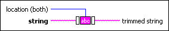

Trim Whitespace VI
Owning Palette: String Functions
Requires: Base Development System
Removes all ASCII white space (spaces, tabs, carriage returns, and linefeeds) from the beginning, end, or both ends of string. The Trim Whitespace VI does not remove double byte characters.
The default is to remove white space from both ends of string.

 Add to the block diagram Add to the block diagram |
 Find on the palette Find on the palette |